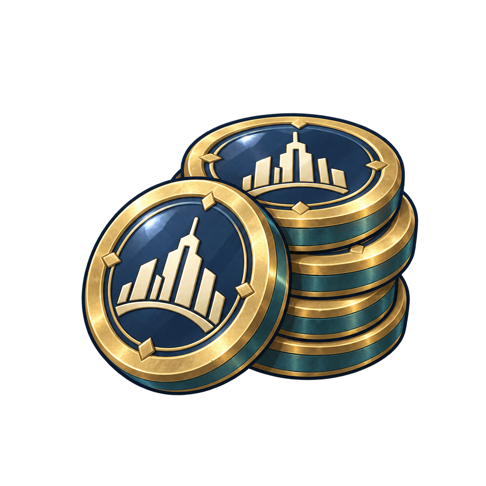
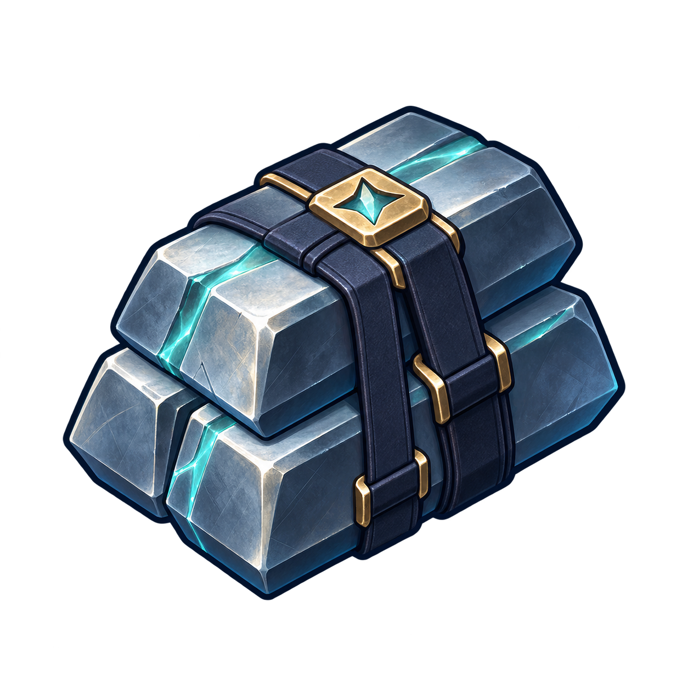
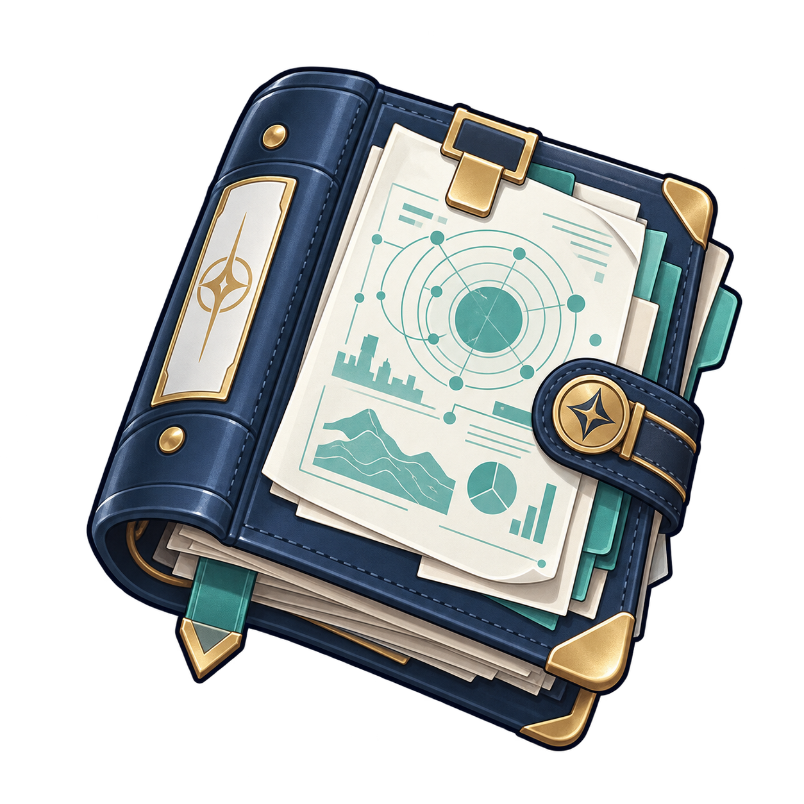
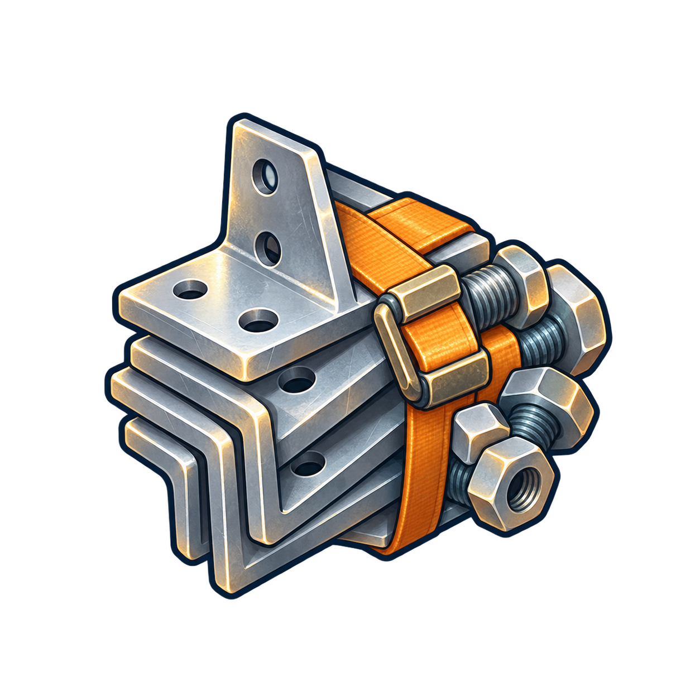
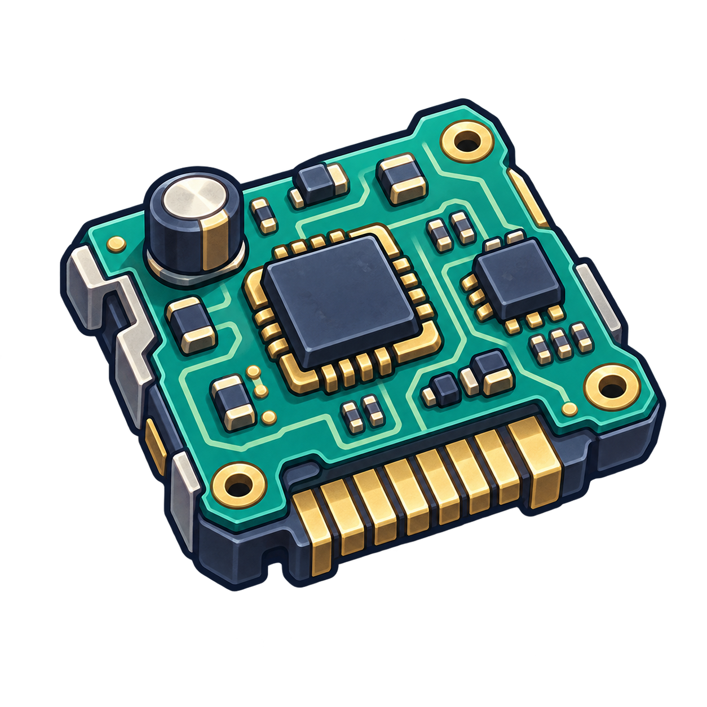
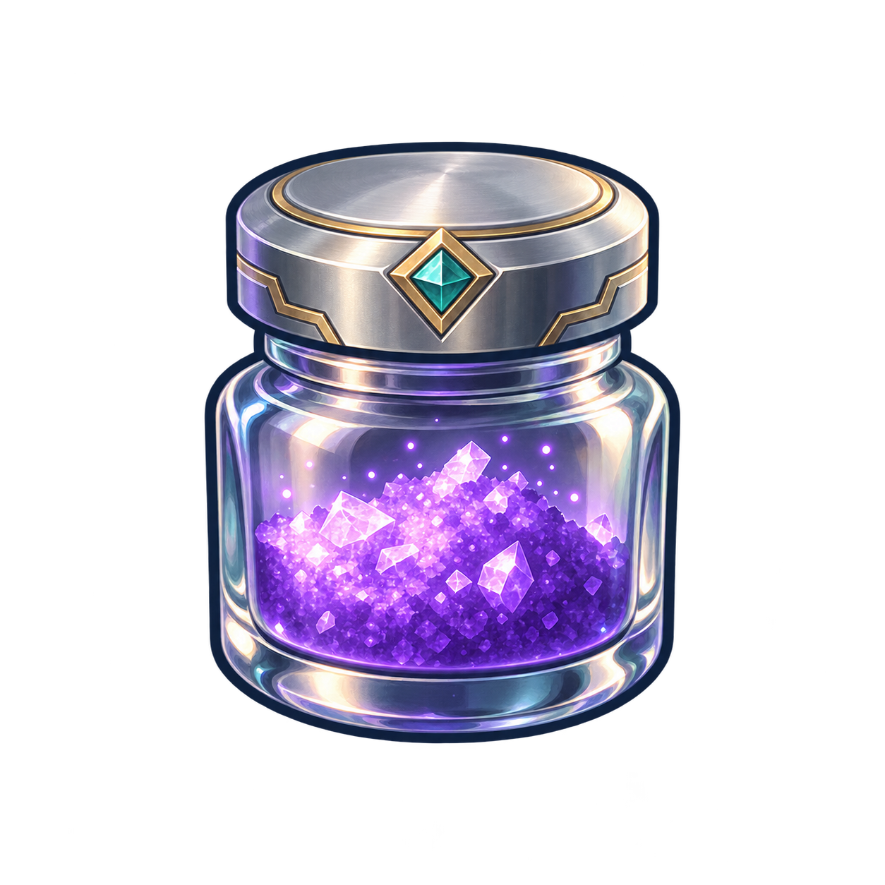
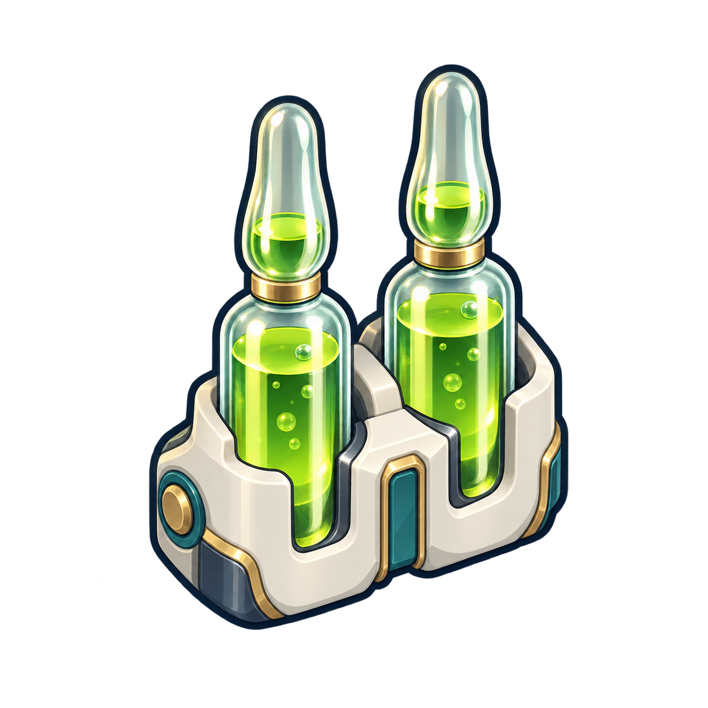

재화 획득·소비 및 영구 성장 개편
2026-10-05 사용자 승인으로 재화 이미지 8종과 아래 915×412 화면을 게임에 연결했습니다. 긴 소수점은 정수 우선·최대 두 자리로 표시하고, 회수 시간은 시간·분으로 표시합니다.
길드 재화 이미지 8종

길드 코인
마력자재
연구자료가속권
건축 부품
전자 부품
마력 촉매
생체 시약협회 · 목록과 선택 상세
Godot의 승인된 PNG 소재·폰트로 렌더링했습니다. 합성 상태의 시안이며 사용자 저장을 변경하지 않았습니다. 실제 플레이·터치·Android QA는 수행하지 않았습니다.